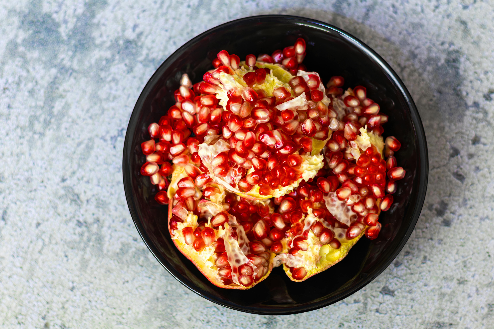
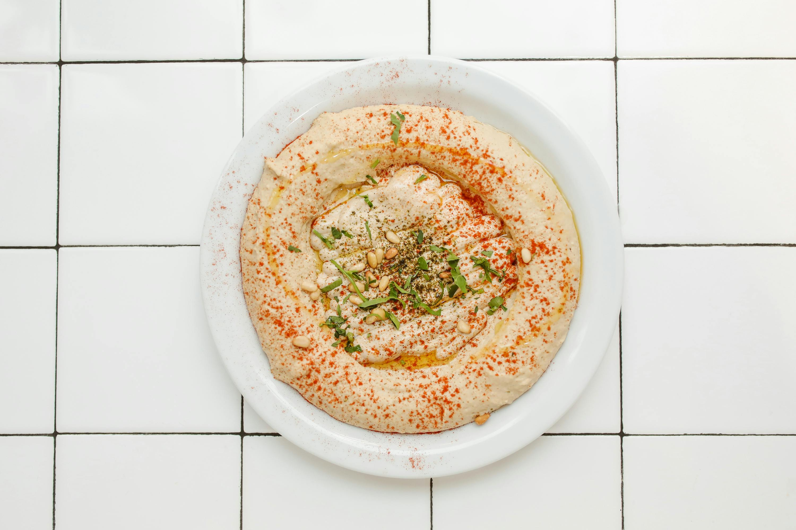
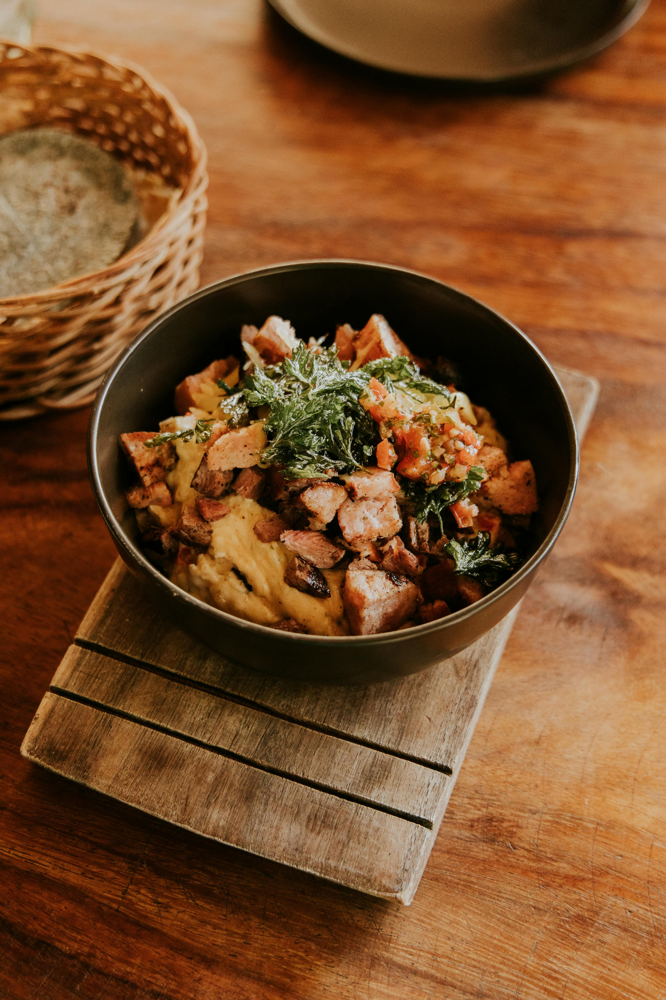

Facil
Para arrancar sin miedo. Recetas de 15 min con lo que tenés en la heladera
Descubrí recetas fáciles y deliciosas para cada ocasión. Inspirate, probá nuevos sabores y disfrutá cocinar todos los días.



Explorá categorías diseñadas para acompañar tu aprendizaje
Para arrancar sin miedo. Recetas de 15 min con lo que tenés en la heladera
Para los que ya se animan a más. Técnicas nuevas y sabores internacionales.
Desafíos culinarios para sorprender a todos en la mesa.
Elegir nuestra página es apostar por recetas simples, claras y pensadas para la vida real. Acá vas a encontrar opciones fáciles de seguir, con ingredientes accesibles y resultados que salen bien, incluso si no tenés mucha experiencia. Más que cocinar, buscamos que disfrutes el proceso y te animes a probar cosas nuevas sin complicarte.

Recetas ligeras, frescas y llenas de sabor para abrir paso al plato principal.